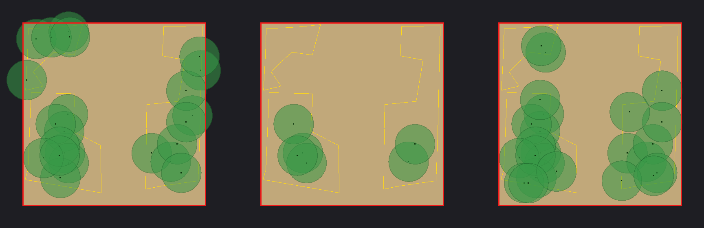

나무·바위를 자유롭게 흩뿌리면서 충돌까지 얻는 유일한 방법.
설치부터 Keep Static Colliders 까지 클릭 순서 그대로 적었다.
STEP 11~15 는 뿌린 것을 걸러내 청크 경계 안에 가두면서 밀도를 지키는 법이다.
왜 이것을 쓰나 —
MultiMeshInstance3D의Populate Surface로 뿌린 것들은 물리 세계에 존재하지 않는다. 캐릭터가 그대로 통과한다. 엔진 내장에는 이를 자동으로 해결하는 버튼이 없고, 클릭만으로 되는 방법은 이것뿐이다. → MultiMeshInstance3D 문서
ProtonScatter 는 "무엇을" 과 "어디에" 를 스스로 만들지 않는다. 씬에 먼저 있어야 한다.
| 있어야 하는 것 | 왜 |
|---|---|
뿌릴 대상 — MeshInstance3D 또는 씬 파일 | Step 5 에서 지정한다 |
바닥 — MeshInstance3D + StaticBody3D + CollisionShape3D | Step 8 의 Project On Colliders 가 레이캐스트로 지면을 찾는다. 콜리전이 없으면 지면에 붙지 못한다 |
🛑 바닥에 콜리전이 없으면 나무가 지면에 붙지 않고 영역 안에 공중부양한다. 바닥
MeshInstance3D를 선택하고 툴바Mesh ▸ Create Collision Shape ▸ Static Body Child ▸ Trimesh로 먼저 만들어 둔다.
충돌까지 원한다면 뿌릴 대상에도 콜리전이 있어야 한다.
두 경로 중 하나를 고른다.
에디터 상단 ▸ AssetLib 탭 ▸ "ProtonScatter" 검색 ▸ Download ▸ Installgit clone --depth 1 https://github.com/HungryProton/scatter.git
# scatter/addons/proton_scatter/ 를 프로젝트의 addons/ 로 복사한다용량 주의 —
addons/proton_scatter/는 13MB 이고 그중 11MB 가demos/다. 저장소에 넣을 거라면demos/와tests/를 빼면 1.5MB 로 줄어든다.
🛑 단demos/를 빼면 기본 프리셋의ScatterItem이demos/assets/brick.tscn을 가리켜 콘솔에Cannot open file이 한 번 뜬다. Step 5 에서 Path 를 자기 모델로 바꾸면 사라진다.
Project ▸ Project Settings… ▸ Plugins 탭 ▸ ProtonScatter 의 Enabled 를 ✅
활성화되면 ProtonScatter · ProtonScatterItem ·
ProtonScatterShape 노드를 Create New Node 목록에서 검색할 수 있게 된다.
안 보이면 활성화가 안 된 것이다.
Create New Node 에서 "scatter" 로 검색해 세 개를 만든다. 부모-자식 관계가 정해져 있다.
ProtonScatterItem · ProtonScatterShape 는 | 반드시 ProtonScatter 의 자식이어야 한다 |
| 여러 종류를 섞으려면 | ProtonScatterItem 을 여러 개 둔다 (각 Proportion 으로 비율 조절) |
| 영역을 여러 개 쓰려면 | ProtonScatterShape 도 여러 개 둘 수 있다 |
ProtonScatter 를 선택해 인스펙터를 열면 기본 프리셋이 자동 적용된다.
(근거 — stack_panel.gd:73-76 이 just_created 인 스택에
presets/scatter_default.tscn 을 적용한다.)
들어오는 값을 그대로 읽으면 이렇다:
modifier 4개
▸ Create Inside (Random) [Create] amount = 75
▸ Randomize Transforms [Edit] position (0.15, 0.15, 0.15)
rotation (20.0, 360.0, 20.0)
scale (0.1, 0.1, 0.1)
▸ Relax Position [Edit] iterations 3 · offset_step 0.2
consecutive_step_multiplier 0.75
▸ Project On Colliders [Edit] ray_length 5.0 · ray_offset 5.0
remove_points_on_miss false
max_slope 90.0 · collision_mask 1이 넷이 Step 6~8 에서 만질 대상 전부다. 순서에도 뜻이 있다 — 뿌리고(Create) → 흩고(Randomize) → 겹침을 풀고(Relax) → 지면에 붙인다(Project).
🛑 코드로
ProtonScatter.new()를 하면 스택이 비어 있다. 자동 적용은 에디터 인스펙터 전용이다.
ProtonScatterShape 를 선택하면 인스펙터에 Shape 칸이
<empty> 로 있다. 클릭해 New 에서 모양을 고른다.
| 고를 수 있는 것 | 무엇 | 크기 프로퍼티 |
|---|---|---|
| ProtonScatterBoxShape | 상자 (가장 흔하다) | size — Vector3 |
| ProtonScatterSphereShape | 구 | radius |
| ProtonScatterPathShape | 곡선을 따라 | Curve3D |
| ProtonScatterBaseShape | 다른 모양의 부모 클래스 | (직접 쓰지 않는다) |
뷰포트에 노란 상자가 나타난다. 이 안쪽이 뿌려질 범위다.
ProtonScatterShape 노드를 옮기면 범위도 함께 움직인다.
Negative 를 켜면 | 그 영역을 빼낸다(구멍을 낸다). 길·건물 자리를 비울 때 |
size.y | 높이도 범위에 들어간다. Project On Colliders 가 지면에 붙여 주므로 2 정도면 충분 |
ProtonScatterItem 을 선택하고 인스펙터에서 두 칸을 정한다.
| 값 | 뜻 | Path 에 넣는 것 |
|---|---|---|
| From current scene | 지금 이 씬 안의 노드 | 씬 트리의 노드 (Assign… 버튼으로 고른다) |
| From disk | 다른 씬 파일 | res://…/tree.tscn |
처음이라면 From current scene 이 쉽다. 씬에 이미 놓아 둔 나무를 그대로 가리키면 된다.
Path 줄의 Assign… 을 누르면 Select a Node 창이 뜬다.
씬 트리에서 뿌릴 대상을 고른다.
🛑 콜리전(Step 9)까지 원한다면 고른 노드 아래에
StaticBody3D ▸ CollisionShape3D가 있어야 한다. ProtonScatter 는 그 shape 을 복제한다. 없으면 메시만 뿌려진다.
고르는 순간 뷰포트에 인스턴스가 나타난다.
ProtonScatter 루트를 선택하고 인스펙터 아래쪽 Modifier Stack 을 본다.
Modifier Stack
+ Add modifier
▸ Create Inside (Random) ← 이것을 클릭해 펼친다
▸ Randomize Transforms
▸ Relax Position
▸ Project On Colliders값을 바꾸면 뷰포트가 즉시 다시 뿌려진다.
| 개수를 정하는 다른 방법 | |
|---|---|
| Create Inside (Poisson) | 개수 대신 radius(최소 간격) 로 정한다. 겹치지 않는 배치가 필요하면 이쪽 |
| Create Inside (Grid) | 격자로 규칙적으로 |
| Create Along Edge (…) | 영역의 가장자리를 따라 — 울타리·가로수 |
Randomize Transforms 를 펼친다. 세 줄이 있고, 각각 무작위 폭이다
(값이 0이면 흩지 않는다).
Rotation 의 Y 가 360 인 것이 핵심이다 — 위 축 기준으로 완전히 무작위로 돌려
같은 나무를 복제한 티를 지운다. X·Z 의 20° 는 살짝 기울여 자연스럽게 만드는 값이다.
| 하고 싶은 것 | 어떻게 |
|---|---|
| 나무가 똑바로만 서게 | Rotation 을 (0, 360, 0) 으로. X·Z 를 0 으로 |
| 바위처럼 아무렇게나 | (360, 360, 360) |
| 크기를 더 다양하게 | Scale 을 (0.3, 0.3, 0.3) 처럼 올린다 |
🛑 회전만 필요하면
Randomize Rotation이라는 별도 modifier 도 있다. 다만 그쪽 기본값은(360, 360, 360)이라 그대로 쓰면 나무가 눕는다. 반드시(0, 360, 0)으로 고쳐서 쓴다.
Relax Position 을 펼친다. 무작위로 뿌리면 나무끼리 겹치는데,
이 modifier 가 서로 밀어내며 간격을 고르게 만든다.
나무가 서로 파고들면 Iterations 를 올리거나 Offset Step 을 키운다.
겹침을 아예 만들지 않으려면 Step 6 에서
Create Inside (Poisson)을 쓰는 편이 더 확실하다.Relax Position은 이미 뿌려진 것을 나중에 미는 방식이다.
인스턴스를 아래로 레이캐스트해 지면에 붙인다.
🛑 바닥 콜리전이 레이어 1 에 없으면 지면에 붙지 않는다. 나무가 공중에 뜨면 여기를 본다.
Ray Length·Ray Offset이 5m 이므로 높낮이 차가 5m 를 넘는 지형에서도 놓친다.
소스 기본값은Remove Points On Miss = true지만 프리셋이false로 덮는다. 직접 modifier 를 추가했을 때는true라서, 바닥을 못 맞히면 인스턴스가 전부 사라진다.
여기가 다른 방법과 갈리는 지점이다. ProtonScatter 루트를 선택하고
인스펙터의 Performance 그룹을 펼친다.
MultiMesh 인스턴스를 채우는 바로 그 루프가, 같은 Transform3D 로
물리 서버에 shape 을 등록한다.
# scatter.gd:448-450
t = item.process_transform(transforms.list[offset + i])
mmi.multimesh.set_instance_transform(i, t) # 렌더
_create_collision(static_body, t) # 물리 — 같은 t
# scatter.gd:609-611 — 끄는 것은 Create Copies(1) 뿐이다
func _create_collision(body: StaticBody3D, t: Transform3D) -> void:
if not keep_static_colliders or render_mode == 1:
return지원 shape — Sphere · Box · Capsule · Cylinder · ConcavePolygon · ConvexPolygon · HeightMap · SeparationRay.
godot --headless --path . -s res://tests/protonscatter_collision_probe.gd[A. keep_static_colliders = false] 레이 12발 중 0발 명중 ✅ 콜리전 없음
[B. keep_static_colliders = true] 레이 12발 중 12발 명중 ✅ 콜리전 있음
콜리전 윗면 높이 ≈ 2.27 m
[C. B + source_scale_multiplier = 4] 레이 12발 중 0발 명중 ✅ 실측된 한계
실패 0 건| # | 제약 | 뜻 |
|---|---|---|
| ① | 씬 트리에 콜리전 노드가 없다 | PhysicsServer3D 에 직접 등록 → Debug ▸ Visible Collision Shapes 에도 안 보인다. 확인은 직접 부딪혀 보는 것뿐 |
| ② | 부모의 scale 이 버려진다 | MeshInstance3D·CollisionShape3D 그 노드 자신의 transform 만 살린다 → 크기는 메시·shape 자체에 넣는다 |
| ③ | Source Scale Multiplier | 키우면 콜리전이 따라오지 않는다(위 실측 C) |
| ④ | collision layer 미설정 | 소스에 body_set_collision_layer 호출이 0회 → 전부 기본 레이어 |
| 무엇을 | 어떻게 |
|---|---|
| 뿌려졌나 | 뷰포트에 보이는가. ProtonScatter 아래 ScatterOutput 이 생겼는가 |
| 드로우콜이 1인가 | F5 로 실행해 모니터를 본다. 에디터 뷰포트 숫자에는 기즈모가 섞인다 |
| 충돌하나 | 🛑 디버그 뷰로는 안 보인다(제약 ①). 캐릭터로 직접 부딪혀 본다 |
사람이 걷지 않아도 판정할 수 있다 — 캐릭터와 똑같은 캡슐로 숲을 가로지르는 직선을 훑는다:
[왼쪽 MultiMesh] 숲 중심까지 4.5 m 를 훑었으나 걸리는 것이 없었다 ✅ 통과
[오른쪽 ProtonScatter] 출발 0.2 m 지점에서 막혔다 ✅ 막힘
실패 0 건여기부터는 뿌린 것을 걸러내는 법이다. 청크 경계 안에 가두면서 밀도를 지킨다 — 모디파이어 스택의 원리,
Remove Outside (Model),Footprint Multiplier,Keep Partial Overlap,Amount. 2026-09-17 라리엔 3D 청크 씬 실측. 줄 번호·코드 전체는 상세 문서 Step 11~19.
인스펙터 카드가 따로따로 보여도 실제로는 한 줄 파이프라인이다.
rebuild
└ modifier_stack.start_update(scatter, domain)
transforms = 빈 목록
for modifier in stack: # modifier_stack.gd:23-24
await modifier.process_transforms(transforms, domain, global_seed)
└ _on_transforms_ready(transforms) # scatter.gd:745
목록이 비었으면 → 지우고 끝 # :762 — build_completed 를 보내지 않는다
아니면 → 아이템마다 몫을 나눠 MultiMesh
build_completed.emit() # :784| 사실 | 그래서 |
|---|---|
| Create 만 늘리고 Remove 는 줄이기만 한다 | 지운 자리는 다시 채워지지 않는다 → 밀도는 Amount 로 되살린다(STEP 15) |
아이템 배정은 목록 순서로 이어 붙인 구간 round(proportion / 합계 × 전체) | 가운데 하나를 지우면 뒤 아이템 자리가 밀린다 |
결과가 0개면 build_completed 가 오지 않는다 | 화면에 아무것도 없고, 기다리는 코드는 멈춘다 |
꺼 둔(enabled) 모디파이어가 게임에서는 돈다 | enabled 검사가 Engine.is_editor_hint() 안에만 있다 → 끄려면 스택에서 뺀다 |
| BoxShape 는 높이까지, PathShape 는 XZ 만 판정 | Box 로 거를 때는 Project On Colliders 앞에 둔다 |
# 헤드리스(= 게임과 같은 비에디터) · chunk_06_13 TreeScatter · Amount 23
모디파이어 빼기 → 나무 23그루
모디파이어 켜기 → 나무 15그루
모디파이어 끄기 → 나무 15그루 ← 꺼도 켠 것과 같다Modifier Stack 패널이 안 보이면 인스펙터 검색칸을 비운다. 패널은
modifier_stack속성의 편집기라 검색어와 이름이 안 맞으면 통째로 숨는다.Force rebuild는 인스펙터 맨 위가 아니라 패널 툴바의 새로고침 아이콘이다.
내장 Remove Outside 는 나무 밑동(원점) 한 점만 본다 — 밑동이 영역 안이면 가지가 몇 m 나가도 남고,
청크 경계는 모른다. 그래서 라리엔 3D 는 Remove Outside (Model) 을 로컬로 추가했다
(원본 애드온에는 없다 · addons/proton_scatter/src/modifiers/remove_outside_model.gd).
# 자리마다 표본점 — 원점 + 모델 AABB 의 XZ 윤곽
점 = 원점 + (아이템 basis × 자리 basis) × (윤곽점 × Footprint Multiplier) + 오프셋
# 청크 경계: 청크 루트 좌표로 |x| 또는 |z| > 32 − Chunk Margin 이면 넘음 — 모드와 상관없이 항상| 모드 | 영역(노란 선) 판정에서 지우는 경우 | 청크 경계 |
|---|---|---|
| 기본 (둘 다 꺼짐) | 표본점 하나라도 영역 밖 | 항상 지킨다 |
| Keep Partial Overlap 켬 | 표본점이 전부 영역 밖 (원점이 안이면 남는다) | 항상 지킨다 |
| Negative Shapes Only 켬 | 표본점 하나라도 negative 영역 안 | 항상 지킨다 |
| 파라미터 | 기본 | 뜻 |
|---|---|---|
| Footprint Multiplier | 1.0 | 발자국 배율. 🛑 0 금지 |
| Edge Samples | 1 | 윤곽 변마다 더 찍는 점 |
| Fallback Radius | 0.0 | 메시를 못 잰 아이템의 반지름 |
| Keep Partial Overlap | false | 🔑 청크 경계만 지키고 모양을 살릴 때 켠다 |
| Negative Shapes Only | false | negative 영역에 걸친 것만 지운다(켜면 Keep Partial 무시) |
| Honor Proportion | true | 지우지 않고 비율을 지키며 자리를 고른다 → 🛑 스택 맨 끝에 둔다 |
| Clip To Chunk | true | 청크 경계 ±32m 도 판정 |
| Chunk Margin | 0.0 | 경계 안쪽 여유(m) |
| Debug Report | false | 재빌드마다 Output 에 판정 내역 |
[Remove Outside (Model)] 15 transforms in
chunk clip: border at +-32.00 m, margin 0.00
PlaneTree (proportion 20): reach 3.84 x 3.44 m — 1 blocked by chunk, 8 by shape
# reach 에는 Source Scale Multiplier 가 빠져 있다 · blocked 는 "들어갈 수 없는 자리 수"(지운 수가 아니다)
윤곽점 × 0 = 0 이라 모든 표본점이 원점 한 점으로 모인다. 붙여 놓고도 막지 못한다.
chunk_03_11 pine_tree 70그루 | 청크 위반 |
|---|---|
footprint_multiplier = 0.0 (파일에 저장돼 있었다) | 🛑 2그루 — 원점은 안, 가지가 0.46m·1.18m 넘어 청크 없는 칸으로 |
1.0 | ✅ 0 |
1 미만(예 0.8)은 잎이 조금 걸쳐도 남기고, 1 초과는 여유를 둔다.
기본값은 가지 전체가 영역 안이어야 남긴다 → 청크와 상관없이 영역 가장자리 나무까지 지운다. 켜면 사실상 청크 경계를 넘는 것만 지워진다.
| 청크 · 노드 | 모델 reach | 없음 | 기본값 | 켬 |
|---|---|---|---|---|
chunk_06_13 TreeScatter | 7.10×7.04m | 23 | 🛑 6 | 15 |
chunk_10_06 TreeScatter | 3.84×3.44m | 15 | 🛑 6 | 14 |
chunk_04_11 TreeScatter | 3.84×3.44m | 20 | 🛑 0 (완료 신호 없음) | 14 |
chunk_06_10 TreeScatter | 0.30×0.33m ×6 | 40 | 🛑 0 (완료 신호 없음) | 40 |
chunk_06_10 MountainMeadowTrees | 1.26×1.30m | 26 | 🛑 6 | 22 |
7개 청크에 켬으로 붙여 실제 검사기(메시 꼭짓점의 볼록 껍질로 잰다)로 판정 — 위반 7·6·10·14·1·1·1 → 전부 0, 나무 수는 23→15 · 28→21 · 1999→1990 · 75→57 · 15→14 · 30→29 · 30→29.
Remove 는 채우지 않는다. 경계 때문에 줄었다면 Create Inside (Random) ▸ Amount 를 올린다.
chunk_06_13 · Keep Partial Overlap 켬 | 23 | 30 | 35 | 40 | 45 | 50 |
|---|---|---|---|---|---|---|
| 남는 나무 | 15 | 21 | 24 ✅ | 29 | 31 | 34 |

| 알아 둘 것 | |
|---|---|
| Amount 를 올려도 기존 자리는 그대로 | 같은 seed 로 같은 순서를 뽑는다 — 실측 23→35 에서 23자리 이동 0.00m. 🛑 Relax Position 이 있으면 서로 밀어내 조금 움직인다(15→20 에서 최대 0.52m) |
| 원래 모습과 똑같이는 안 된다 | 경계 밖으로 나가던 나무가 곧 위반이다. 나무는 경계에서 모델 반폭만큼 안쪽에만 남는다 |
| 배치를 바꾸려면 | Global Seed 를 바꾼다 |
| 경계 바깥까지 덮으려면 | 옆 청크 씬에 따로 심는다(청크가 없으면 지면부터) |
| 하고 싶은 것 | 설정 |
|---|---|
| 청크 경계만 지키고 영역 모양은 그대로 | Remove Outside (Model) 을 맨 끝에 · Keep Partial Overlap 켬 |
| 경계 때문에 준 나무 수를 되살리기 | Amount 를 올린다 (chunk_06_13 23 → 35) |
| 가지까지 영역 안에 딱 맞게 | 기본값 — 많이 지워지므로 영역을 넓히거나 Amount 를 크게 |
| 길·건물 자리에 가지가 덮이지 않게 | negative 영역 + Negative Shapes Only 켬 |
| 잎이 경계에 조금 걸쳐도 되게 | Footprint Multiplier 1 미만 — 🛑 0 금지 |
| 경계에서 여유 | Chunk Margin 2.0 |
| 모디파이어를 잠깐 끄기 | 🛑 enabled 끄기는 게임에서 안 꺼진다 → 스택에서 뺀다 |
| 증상 | 원인과 해결 |
|---|---|
| Create New Node 에 ProtonScatter 가 없다 | Step 2 의 플러그인 활성화를 안 했다 |
| 아무것도 안 뿌려진다 | ① ScatterItem 의 Path 가 비었다 ② ScatterShape 의 Shape 이 <empty> ③ Modifier Stack 이 비었다(코드로 만든 경우) |
Cannot open file … brick.tscn | 애드온을 demos/ 없이 벤더링했다. Step 5 에서 Path 를 바꾸면 사라진다 |
| 나무가 공중에 뜬다 | Project On Colliders 가 지면을 못 찾는다 → 바닥에 콜리전을 주고 Collision Mask·Ray Length(5m) 확인 |
| 나무가 눕거나 뒤집힌다 | Randomize Transforms ▸ Rotation 의 X·Z 를 0 으로 |
| 나무끼리 겹친다 | Relax Position ▸ Iterations 를 올리거나 Create Inside (Poisson) 으로 |
| 충돌이 안 생긴다 | ① Keep Static Colliders ✅ ② Render Mode = Use Instancing ③ 원본에 StaticBody3D ▸ CollisionShape3D 가 있는가 |
| 콜리전이 안 보인다 | 🛑 정상이다. 노드를 만들지 않으므로 디버그 뷰에 안 나온다 |
| 콜리전 크기가 메시와 다르다 | 부모의 scale 이 버려졌다(제약 ②) |
| 실행 중 배치가 바뀐다 | Enable Updates In Game 을 끈다 |
| Remove Outside (Model) 을 붙였더니 나무가 너무 적다 | Keep Partial Overlap 켜고 Amount 를 올린다(STEP 14·15) |
나무가 전부 사라졌다 · build_completed 가 안 온다 | 걸러내기로 0개 — 0개면 신호를 보내지 않는다(STEP 11) |
| 붙였는데도 가지가 경계를 넘는다 | Footprint Multiplier 가 0 → 1.0(STEP 13) |
| 에디터에서 끈 모디파이어가 게임에서 돈다 | enabled 는 에디터에서만 지켜진다 → 스택에서 뺀다 |
| Modifier Stack 패널이 없다 | 인스펙터 검색칸을 비운다 |
씬이 통째로 안 열린다(Parse Error) | .tscn 에 병합 충돌 표시가 남았거나, 로컬 모디파이어 스크립트를 커밋하지 않았다 |
| 상황 | 답 |
|---|---|
| 자유 배치 + 충돌이 둘 다 필요 | ✅ ProtonScatter — 이것 말고 클릭으로 되는 방법이 없다 |
| 격자에 놓아도 되는 건물·울타리 | GridMap + MeshLibrary (내장, 콜리전 자동) |
| 충돌이 필요 없는 풀·꽃·자갈 | MultiMeshInstance3D + Populate Surface (내장) |
| 부딪힐 나무가 수십 그루뿐 | 그냥 개별 노드. 가장 단순하다 |
이 페이지는 클릭 순서다. 원리·다른 해법·코드는 문서 쪽이 더 자세하다.